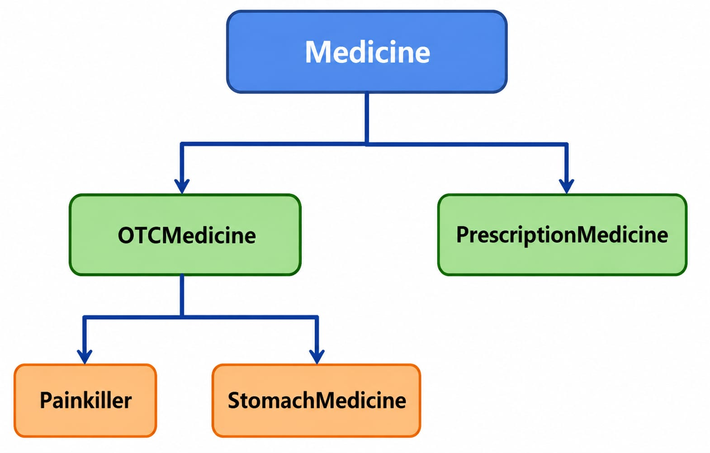

Smart Pharmacy Management & Profit Analysis System
SCENARIO :
3 friends- Mysha , Radifa & Taspia jointly established
a pharmacy investing a fixed principal amount. Their goal is not only to manage the
pharmacy efficiently but also to determine whether the business is profitable enough to continue.
The system manages different types of medicines, such as OTC Medicines and Prescription Medicines. OTC medicines include categories like Painkillers and Stomach Medicines, while Prescription Medicines require a doctor's prescription before sale.
Each medicine stores information such as Medicine ID, Name, Company, Purchase Price, Selling Price, Stock Quantity, and Expiry Date. When a customer buys medicine, the system updates the stock automatically, records the sale, and calculates the profit based on the purchase and selling prices.
To demonstrate inheritance, the project uses the following hierarchy:

For example, Painkiller inherits from OTCMedicine, and OTCMedicine inherits from Medicine, which demonstrates multilevel inheritance.
All medicine information is stored using the Java Collections Framework (ArrayList). The system uses encapsulation by keeping all data members private and accessing them through getter and setter methods.
If a user enters an invalid price, negative stock, or tries to sell more medicine than is available in stock, the system handles these situations using exception handling.
The application also includes a simple Java Swing GUI, where the pharmacist can:
- Add Medicine
- View Medicine
- Sell Medicine
- Search Medicine
- Update Stock
- View Profit Report
At the end of the evaluation period, the system calculates the total profit. If the profit is at least 1.5 times the principal investment, the pharmacy will continue operating. Otherwise, the system will recommend closing the pharmacy.
This project follows Object-Oriented Programming principles by applying classes, objects, constructors, encapsulation, inheritance, multilevel inheritance, polymorphism, dynamic binding, exception handling, Java Collections Framework, packages, and an event-driven GUI.